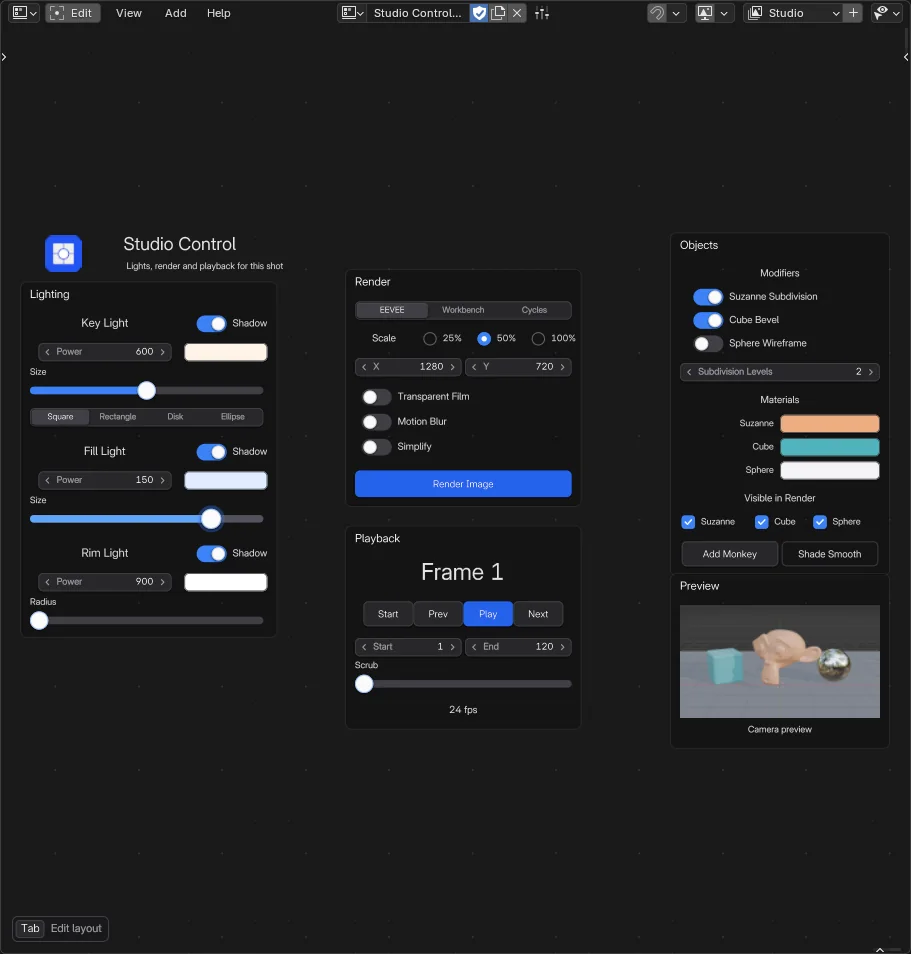
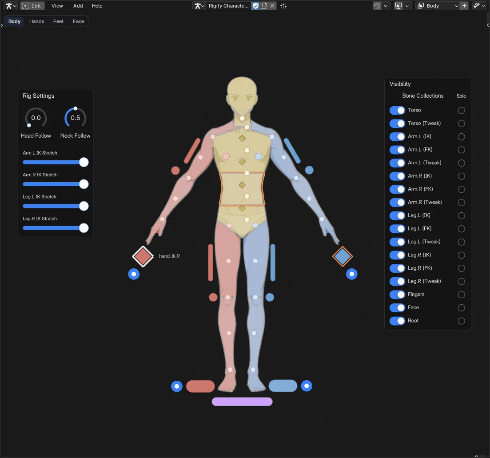

FlexSpace gives you a canvas: an editor where you lay out your own buttons, sliders, toggles, labels and images, then use them while you work. Run operators and scripts, drive any property, keep your tools one click away.
It comes with two canvases: Flex Space, for control panels, and Armature Picker, a canvas of buttons that select the bones of your rig so you can pose without hunting for them in the viewport.
 Screenshot
ScreenshotStep 1: Open a canvas#
- In any area, open the Editor Type menu (the first button of the header) and pick Flex Space.
- Click New in the header (or the New button of the card in the middle).
 Screenshot
ScreenshotStep 2: Add a widget#
Every canvas has two modes. Press Tab over the canvas (or click Edit in the header) to switch.
- Edit Mode: build the layout. Add, move, resize, rotate, group and style widgets.
- Live Mode: use the widgets. Click buttons, drag sliders, flip toggles.
- Press Tab for Edit Mode.
- Press Shift+A and choose a widget, for example Data > Numbers > Lineal (or just type
lineal). Click to place it. - Open the sidebar (N), Widget tab, and set what it controls. For a slider, type a Data Path such as
scene., or use the eyedropper button next to the field and right-click any property in Blender.frame_current
Step 3: Use it#
Press Tab to go back to Live Mode and drag the slider.


ScreenshotEvery widget and what it can drive: Widgets, Color & Brush Widgets and Binding Properties.
Your first picker#
- Select your rig, enter Pose Mode (Ctrl+Tab in the 3D Viewport), and in another area pick Armature Picker from the Editor Type menu.
- Click New Picker on the card, select some bones in the 3D Viewport and click Import Selected Bones. Click to place each button (the left and right bones of a pair come together).
- Press Tab to go back to posing and click a button: its bone is selected.


ScreenshotWhere things are#
- Header: Edit toggle, the View, Selection (Edit Mode) and Help menus, canvas selector, presets, snapping, minimap, pages and widget visibility. Help holds this guide, the demo files and Report a Bug....
- Sidebar (N): the Widget tab holds the active widget's settings. The Canvas tab holds the pages and their modes, and the Library of canvases and global presets. A picker adds an Armature tab (bone names, bone collections).
- Picker header: Utils (import bones, repair bindings). The Toolbar (T) sets what a press on a button does: select, move, rotate or scale its bone.
- Right-click in Edit Mode: the context menu (grouping, frames, order, delete).
- Preferences > Add-ons > FlexSpace: modules, themes and add-on settings.
Next steps#
- Demo Files: open a finished control panel in a new window (Help > Demo Files, or Open a Demo on the card of an empty editor) and see how it is made.
- Recipes: set up a full studio for Sculpt, Texture Paint, Weight Paint or Grease Pencil, step by step.
- The Canvas: move around, use pages and set up the add-on.
- Shortcuts: all the keys.